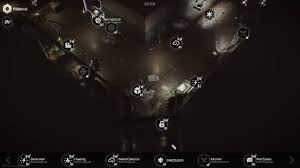

Escape from Tarkov is a player vs player game. When playing you can form teams up to 4 players. There are many different maps you can chose from before you go in a raid. You will also select a time of day or night. Depending on the time you select the wait time will change.
Before you select what map you want to play on you need to chose a character. The one on the left is your Scav. The Scav is more for making money and do little challenges with. The one thing you have to wait is the for is the cool down the scav has after you come back from a raid. The one on the right is your pmc. The pmc is more important because its your main character. The items you take in raid as a pmc are lost if you die. Thats why your pmc is more for challenges. Both charcters have their strong suits on each map. Some maps mostly Scavs play on so Pmc's avoide it
This is your hide out its very important if you want to progress in the game. Every time you go into a raid you will find items to upgrade your stash. There are many different things to upgrade. The stash is an important upgrade because it holds all the items you pick up in raid.